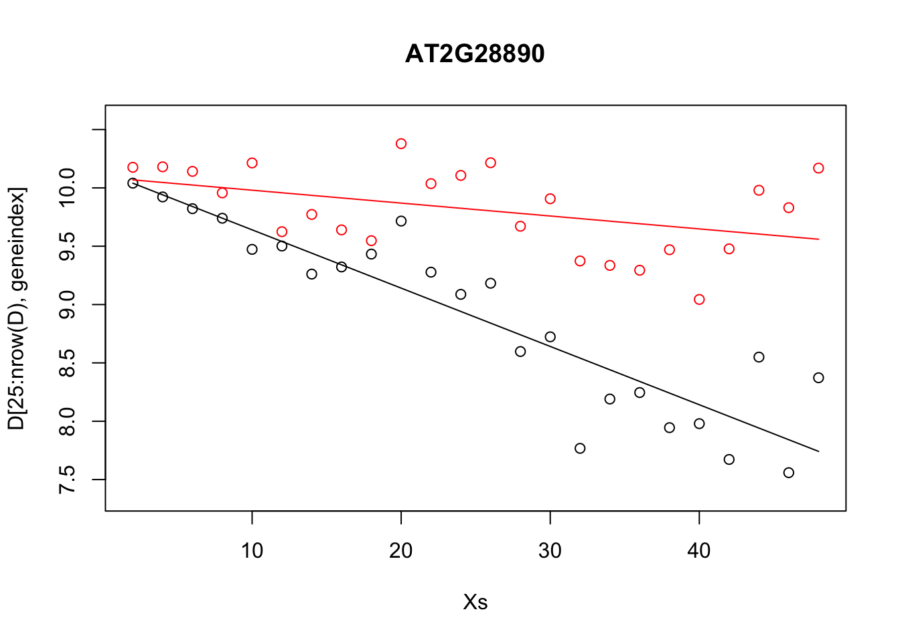
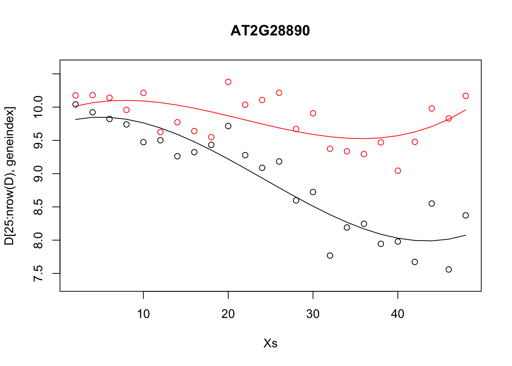
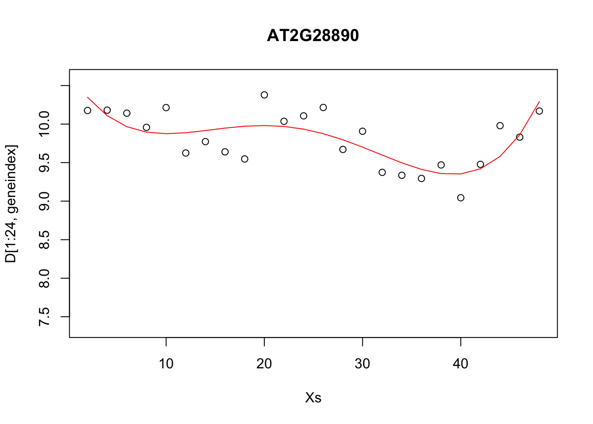
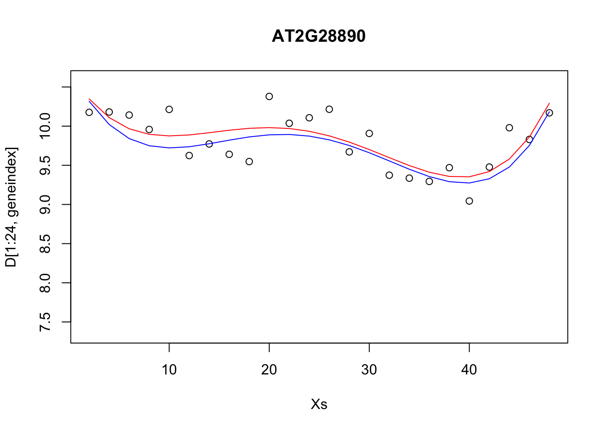
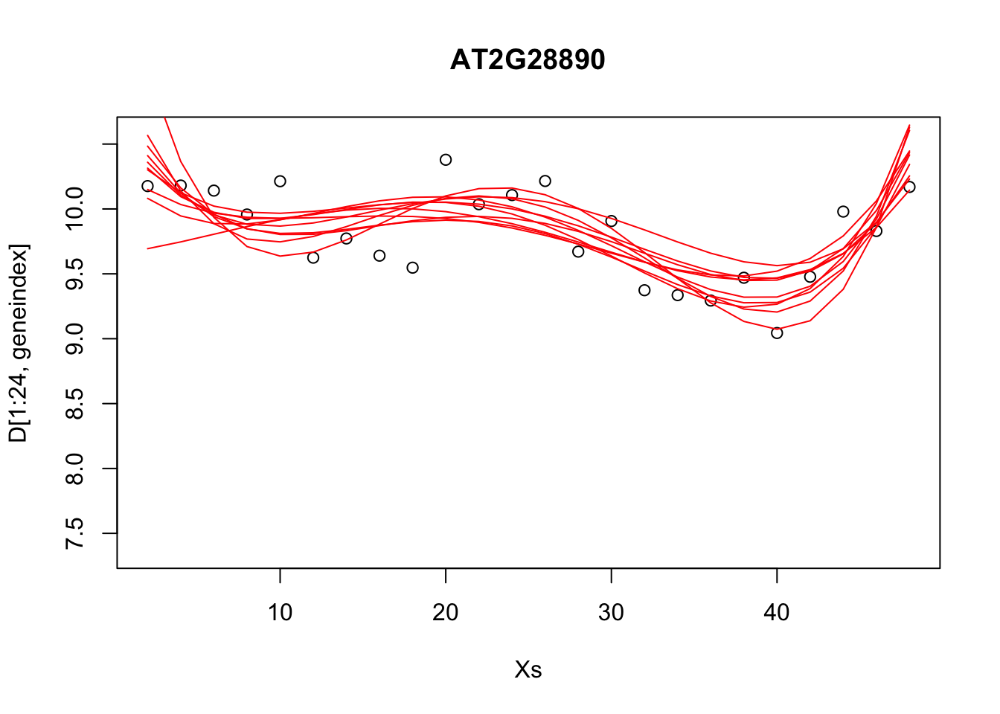
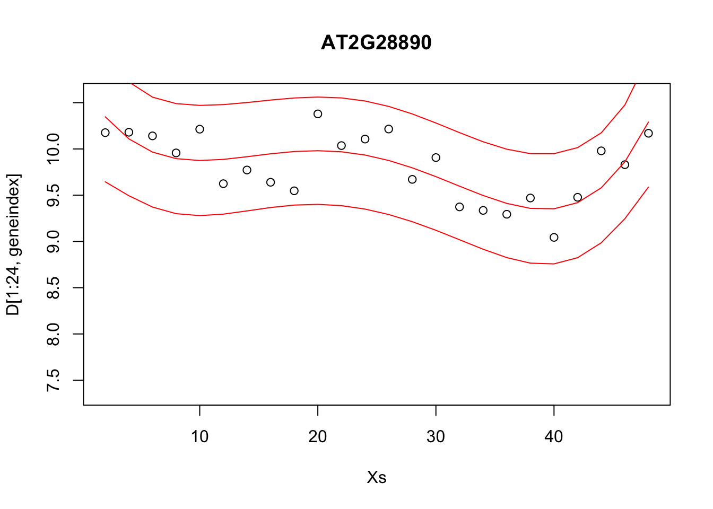
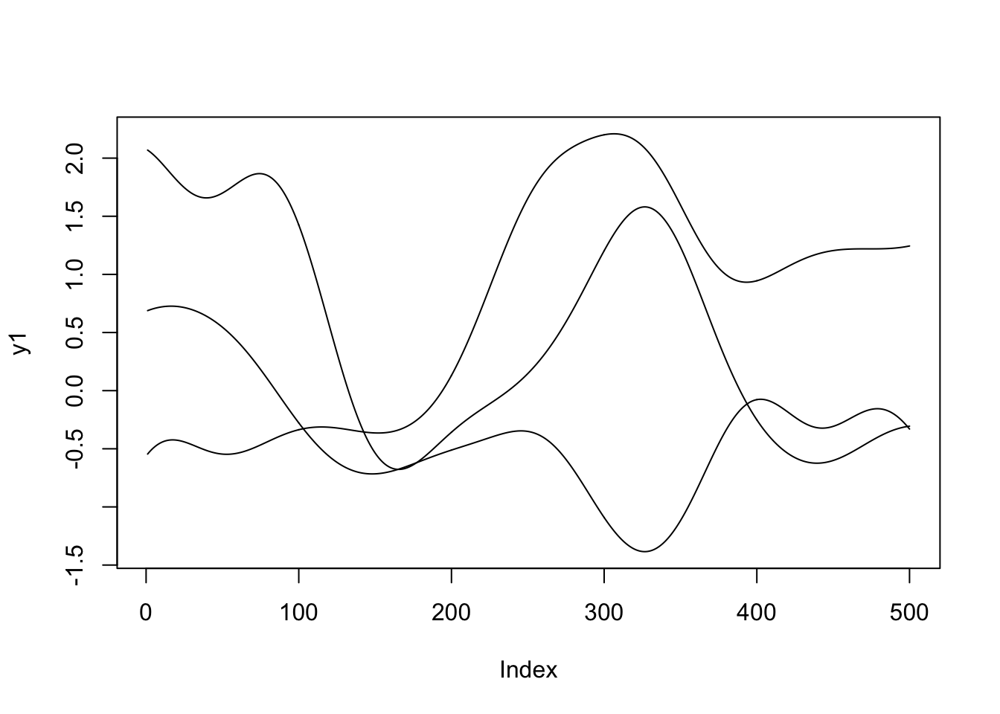
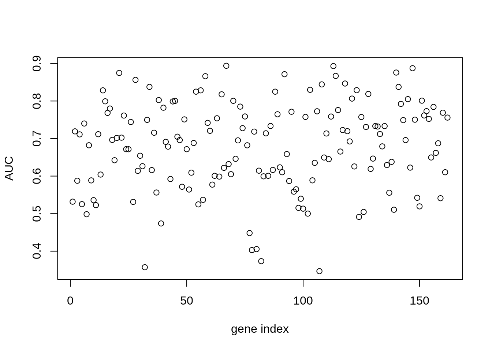
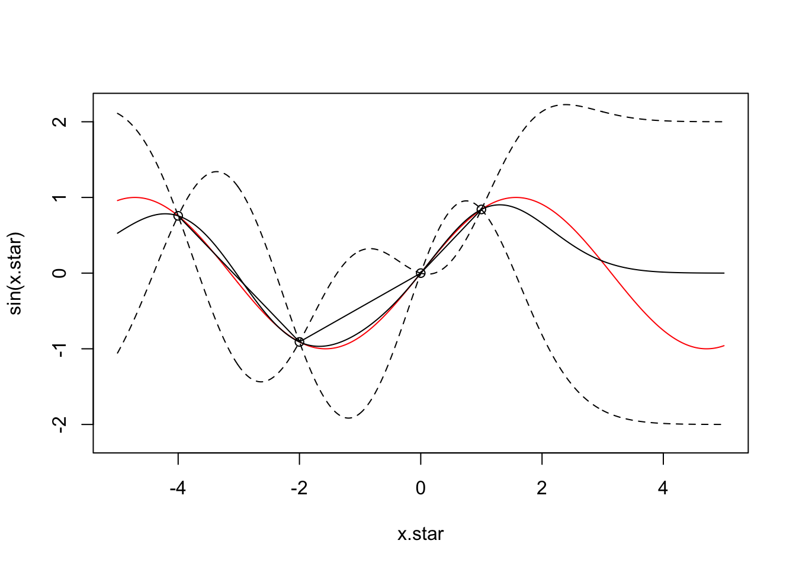
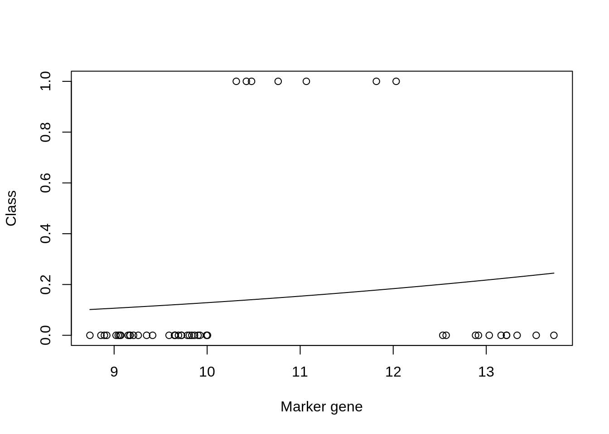

10 Linear regression and logistic regression
Supervised learning refers to the general task of identifying how a set of annotated input data maps to a set of outcomes. In other words, it’s about learning functions from a labelled set of data, and using those functions for prediction. The labelled data typically consists of a matched pair of observations \(\{\mathbf{X},\mathbf{y}\}\), where \(\mathbf{X}\) (the input variables) usually denotes a matrix of (real-valued) explanatory variables, with \(\mathbf{X}_i\) denoting the \(i\)th column which contains observations for the \(i\)th variable, and \(\mathbf{y} = (y_1,\ldots,y_n)^\top\) (the output variable) denotes a vector of observations for a variable of interest[^The input variables need not be real values vectors, and could instead represent any measurement including graphs, text etc.]. Depending on the nature of the output variable, supervised learning is generally split into regression and classification tasks.
Within a regression setting, we aim to identify how the input variables map to the (continuous-valued) output variable(s). A simple example would involve measuring the population size of a bacterial culture, \(\mathbf{y} = (N_1,\ldots,N_n)^\top\), at a set of time points, \(\mathbf{X} = (t_1,\ldots,t_n)^\top\), and learning the function that maps from \(\mathbf{X}\) to \(\mathbf{y}\). Doing so should reveal something about the physical nature of the system, such as identifying the existence of distinct phases of growth. Correctly identifying these functions would also allow us to predict the output variable, \(\mathbf{y}^* = (N_i^*,\ldots,N_k^*)^\top\), at a new set of times, \(\mathbf{X}^* = (t_i,\ldots,t_k)^\top\).
Classification algorithms, on the other hand, deal with discrete-valued outputs. Here each observation in \(\mathbf{y} = (y_1,\ldots,y_n)\) can take on only a finite number of values. For example, we may have a measurment that indicates “infected” versus “uninfected”, which can be represented in binary, \(y_i \in [0,1]\). More generally we have data that falls into \(K\) classes e.g., “group 1” through to “group K”. As with regression, the aim is to identify how the (potentially continuous-valued) input variables map to the discrete set of class labels, and ultimately, assign labels to a new set of observations. Notable examples would be to identify how the expression levels of particular set of marker genes are predictive of a discrete phenotype.
In section 10.1 we briefly recap linear regression. We demonstrate the use of regression to predict gene expression values as a function of time, and how this can be used to inform us about the nature of the data, and as a way to make decisions about whether there are changed in gene expression over time.
In section 10.2 we introduce logistic regression (section 10), and demonstrate how such approaches can be used to predict pathogen infection status in Arabidopsis thaliana. By doing so we identify key marker genes indicative of pathogen growth.
Finally, we note the limitations of linear classification algorithms, and introduce nonlinear approaches based on Gaussian processes in section ??.
10.1 Regression
In this section, we will introduce regression. To do so will make use of an existing dataset which captures the gene expression levels in the model plant Arabidopsis thaliana following innoculation with Botrytis cinerea (Windram et al. 2012), a necrotrophic pathogen considered to be one of the most important fungal plant pathogens due to its ability to cause disease in a range of plants. Specifically this dataset is a time series measuring the gene expression of 100 or so genes in Arabidopsis leaves following inoculation with Botrytis cinerea over a \(48\) hour time window at \(2\) hourly intervals. Whilst this example is distinctly biological in motivation the methods we discuss should be general and applicable to other collections of time series data.
The dataset is available from GEO (GSE39597) but a pre-processed version has been deposited in the {data} folder. The pre-processed data contains the expression levels of a set of \(163\) marker genes in tab delimited format. The fist row contains gene IDs for the marker genes (the individual input variables). Column \(2\) contains the time points of observations, with column \(3\) containing a binary indication of infection status, evalutated according to the prescence of Botrytis cinerea Tubulin protein. All subsequent columns indicate (\(\log_2\)) normalised Arabidopsis gene expression values from microarrays (V4 TAIR V9 spotted cDNA array). The expression dataset itself contains two time series: the first \(24\) observations represent measurements of Arabidopsis gene expression in a control time series (uninfected), from \(2h\) through \(48h\) at \(2\)-hourly intervals, and therefore capture dynamic aspects natural plant processes, including circadian rhythms; the second set of \(24\) observations represents an infected dataset, again commencing \(2h\) after inoculation with Botyris cinerea through to \(48h\).
Within this section our output variable will typically be the expression level of a particular gene of interest, denoted \(\mathbf{y} =(y_1,\ldots,y_n)^\top\), with the explanatory variable being time, \(\mathbf{X} =(t_1,\ldots,t_n)^\top\). We can read the dataset into {R} as follows:
We can also extract out the names of the variables (gene names), and the unique vector of measurment times:
Exercise 9.1. Plot the gene expression profiles to familiarise yourself with the data. No, really, plot the data. This is always the first thing you should be doing with your datasets - look at them.
The aim of this module is to give you hands on experience with linear and logistic regression and cover a number of other concepts from machine learning. The main points are:
- Do you understand the data? A priority before doing any ML should be look, interogate and understand the data.
- What is the data.
- Look at the data.
- Repeat 1-3 a few more times.
- Once more for luck, look at the data.
- Once we understand the data, we will have a better grasp of what we are doing and what ML approaches to take. In the first example we will start with some linear regression.
- We will explore more complicated forms of regression.
- We will get an idea of how to partition data into training and test sets, and how in doing so we may distuinguish between different models.
- We will start to get an intuition for how regression tasks may be used to predict values an new locations, and why choosing the right kind of model is important.
10.1.1 Linear regression
Recall that one of the simplest forms of regression, linear regression, assumes that the variable of interest, \(y\), depends on an explanatory variable, \(x\), via:
\(y = m x + c.\)
For a typical set of data, we have a vector of observations, \(\mathbf{y} = (y_1,y_2,\ldots,y_n)\) with a corresponding set of explanatory variables. For now we can assume that the explanatory variable is scalar, for example time (in hours), such that we have a set of observations, \(\mathbf{X} = (t_1,t_2,\ldots,t_n)\). Using linear regression we aim to infer the parameters \(m\) and \(c\), which will tell us something about the relationship between the two variables, and allow us to make predictions at a new set of locations, \(\mathbf{X}*\).
Within {R}, linear regression can be implemented via the {lm} function. In the example below, we perform linear regression for the gene expression of AT2G28890 as a function of time, using the infection time series only (hence we use only the first \(24\) datapoints):
##
## Call:
## lm(formula = AT2G28890 ~ Time, data = D[25:nrow(D), ])
##
## Coefficients:
## (Intercept) Time
## 10.14010 -0.04997Linear regression is also implemented within the {caret} package, allowing us to make use of its various other utilities. In fact, within {caret}, linear regression is performed by calling the function {lm}. In the example, below, we perform linear regression for gene AT2G28890, and predict the expression pattern for that gene using the {predict} function:
## Loading required package: lattice## Loading required package: ggplot2library(mlbench)
set.seed(1)
geneindex <- which(genenames=="AT2G28890")
lrfit <- train(y~., data=data.frame(x=Xs,y=D[25:nrow(D),geneindex]), method = "lm")
predictedValues<-predict(lrfit)A summary of the model, including parameters, can be printed out to screen using the {summary} function:
##
## Call:
## lm(formula = .outcome ~ ., data = dat)
##
## Residuals:
## Min 1Q Median 3Q Max
## -0.77349 -0.17045 -0.01839 0.15795 0.63098
##
## Coefficients:
## Estimate Std. Error t value Pr(>|t|)
## (Intercept) 10.14010 0.13975 72.56 < 2e-16 ***
## x -0.04997 0.00489 -10.22 8.14e-10 ***
## ---
## Signif. codes: 0 '***' 0.001 '**' 0.01 '*' 0.05 '.' 0.1 ' ' 1
##
## Residual standard error: 0.3317 on 22 degrees of freedom
## Multiple R-squared: 0.826, Adjusted R-squared: 0.8181
## F-statistic: 104.4 on 1 and 22 DF, p-value: 8.136e-10Finally, we can fit a linear model to the control dataset, and plot the inferred results alongside the observation data:
lrfit2 <- train(y~., data=data.frame(x=Xs,y=D[1:24,geneindex]), method = "lm")
predictedValues2<-predict(lrfit2)
plot(Xs,D[25:nrow(D),geneindex],type="p",col="black",ylim=c(min(D[,geneindex])-0.2, max(D[,geneindex]+0.2)),main=genenames[geneindex])
points(Xs,D[1:24,geneindex],type="p",col="red")
points(Xs,predictedValues,type="l",col="black")
points(Xs,predictedValues2,type="l",col="red")
First take some time to understand what we are doing here. There is little point in copying and pasting the code and moving on, this achieves nothing, other than to demonstrate that one can copy and paste. Whilst the above model appeared to do resonably well at capturing the general trends in the datset, if we look at the control data (in red), you may notice that, visually, there appears to be more structure to the data than indicated by the model fit. Indeed, if we look AT2G28890 up on CircadianNET, we will see it is likely circadian in nature (\(p<5\times10^{-5}\)) suggesting there may be some rhythmicity to it in order to better accomodate the nature of the data we may need something more complicated.
10.1.2 Polynomial regression
In general, linear models will not be appropriate for a large variety of datasets, particularly when the variables of interest are nonlinear. We can instead try to fit more complex models, such as a quadratic function, which has the following form:
\(y = m_1 x + m_2 x^2 + c,\)
where \(m = [m_1,m_2,c]\) represent the parameters we’re interested in inferring. An \(n\)th-order polynomial has the form:
\(y = \sum_{i=1}^{n} m_i x^i + c.\)
where \(m = [m_1,\ldots,m_n,c]\) are the free parameters. Within {R} we can infer more complex polynomials to the data using the {lm} package by calling the {poly} function when specififying the symbolic model. In the example below we fit a \(3\)rd order polynomial (the order of the polynomial is specified via the {degree} variable):
We can do this within {caret}: in the snippet, below, we fit \(3\)rd order polynomials to the control and infected datasets, and plot the fits alongside the data.
lrfit3 <- train(y~poly(x,degree=3), data=data.frame(x=D[1:24,1],y=D[1:24,geneindex]), method = "lm")
lrfit4 <- train(y~poly(x,degree=3), data=data.frame(x=D[25:nrow(D),1],y=D[25:nrow(D),geneindex]), method = "lm")
plot(Xs,D[25:nrow(D),geneindex],type="p",col="black",ylim=c(min(D[,geneindex])-0.2, max(D[,geneindex]+0.2)),main=genenames[geneindex])
points(Xs,D[1:24,geneindex],type="p",col="red")
lines(Xs,fitted(lrfit3),type="l",col="red")
lines(Xs,fitted(lrfit4),type="l",col="black")
Note that, by eye, the fit appears to be a little better than for the linear regression model. Well, maybe! We can quantify the accuracy of the models by looking at the root-mean-square error (RMSE) on hold-out data (cross validation), defined as:
\(\mbox{RMSE} = \sqrt{\sum_{i=1}^n (\hat{y_i}-y_i)^2/n}\)
where \(\hat{y_i}\) is the predicted value and \(y_i\) the observed value of the \(i\)th (held out) datapoint. In previous sections we explicitly specified a set of training data and hold-out data (test data). If we do not specify this in {caret}, the data is split by default values.
Exercise 9.4. What happens if we fit a much higher order polynomial? Try fitting a polynomial with degree = 20 and plotting the result. As we increase the model complexity the fit appears to match much more closely to the observed data. However, intuitively we feel this is wrong. Whilst it may be possible that the data was generated by such complex polynomials, it’s far more likely that we are overfitting the data. We can evaluate how good the model really is by holding some data back and looking at the RMSE from bootstrapped samples. Try splitting the data into training and test datasets, and fitting polynomials of increasing complexity. Plot the RMSE on the training and the test datasets as a function of degree. How does the RMSE compare? Which model seems to be best?
10.1.3 Distributions of fits
In the previous section we explored fitting a polynomial function to the data. Recall that we can fit a \(4\)th order polynomial to the control datasets as follows:
lrfit3 <- lm(y~poly(x,degree=4), data=data.frame(x=D[1:24,1],y=D[1:24,geneindex]))
plot(Xs,D[1:24,geneindex],type="p",col="black",ylim=c(min(D[,geneindex])-0.2, max(D[,geneindex]+0.2)),main=genenames[geneindex])
lines(Xs,fitted(lrfit3),type="l",col="red")
It looks reasonable, but how does it compare to the following shown in blue?
lrfit4 <- lrfit3
lrfit4$coefficients <- lrfit4$coefficients + 0.1*matrix(rnorm(length(lrfit4$coefficients)),length(lrfit4$coefficients));
pred1<-predict(lrfit4, data=data.frame(x=D[1:24,1],y=D[1:24,geneindex]))
plot(Xs,D[1:24,geneindex],type="p",col="black",ylim=c(min(D[,geneindex])-0.2, max(D[,geneindex]+0.2)),main=genenames[geneindex])
lines(Xs,fitted(lrfit3),type="l",col="red")
lines(Xs,pred1,type="l",col="blue")
Our new fit was generated by slightly perturbing the optimised parameters via the addition of a small amount of noise. We can see that the new fit is almost as good, and will have a very similar SSE[^This should give us some intuition on the notion of over-fitting. For example, if we make a small perturbation to the parameters of a simpler model, the function will not change all that much; if the simpler model is doing a resonable job of explaining the data, then there may be no necessity of fitting a more complex one. On the other hand, if we made a small perturbation to the parameters of a more complex polynomial, the function may look drastically different. To explain the data with the more complex model would therefore require very specific sets of parameters]. In general, inferring a single fit to a model is prone to overfitting. A much better approach is to instead fit a distribution over fits. We can generate samples from a linear model using the {coef} function. To do so we must use the {lm} function directly, and not via the {caret} package.
## Loading required package: MASS## Loading required package: Matrix## Loading required package: lme4##
## arm (Version 1.11-1, built: 2020-4-27)## Working directory is /home/ubuntu/Course_Materials/intro-machine-learninglrfit4 <- lm(y~poly(x,degree=4), data=data.frame(x=D[1:24,1],y=D[1:24,geneindex]))
simulate <- coef(sim(lrfit4))
paramsamp <- head(simulate,10)This will sample model parameters that are likely to be explaining the dataset, in this case we have produced \(10\) different set of sample parameters. In the code, below, we plot these \(10\) sample polynomials:
plot(Xs,D[1:24,geneindex],type="p",col="black",ylim=c(min(D[,geneindex])-0.2, max(D[,geneindex]+0.2)),main=genenames[geneindex])
for (i in c(1,2,3,4,5,6,7,8,9,10)){
lrfit4$coefficients <- paramsamp[i,]
pred1<-predict(lrfit4, data=data.frame(x=D[1:24,1],y=D[1:24,geneindex]))
lines(Xs,pred1,type="l",col="red")
}
Alternatively, we can visualise the confidence bounds directly:
lrfit4 <- lm(y~poly(x,degree=4), data=data.frame(x=D[1:24,1],y=D[1:24,geneindex]))
pred1<-predict(lrfit4, interval="predict")## Warning in predict.lm(lrfit4, interval = "predict"): predictions on current data refer to _future_ responsesplot(Xs,D[1:24,geneindex],type="p",col="black",ylim=c(min(D[,geneindex])-0.2, max(D[,geneindex]+0.2)),main=genenames[geneindex])
lines(Xs,pred1[,1],type="l",col="red")
lines(Xs,pred1[,2],type="l",col="red")
lines(Xs,pred1[,3],type="l",col="red")
10.2 Classification
Classification algorithms are a supervised learning techniques that assign data to categorical outputs. For example we may have a continuous input variable, \(X\), and want to learn how that variable maps to a discrete valued output, \(y\in [0,1]\), which might represent two distinct phenotypes “infected” versus “uninfected”.
This section is split as follows: in section 10 we introduce logistic regression, a simple classification algorithm based on linear models; and in section @ref(#gp-classification) we demonstrate the use of nonlinear classifiers based on Gaussian process, highlighting when GP classifiers are more appropriate.
10.2.1 Logistic regression
The type of linear regression models we’ve been using up to this point deal with real-valued observation data, \(\mathbf{y}\), and are therefore not appropriate for classification. To deal with cases where \(\mathbf{y}\) is a binary outcome, we instead fit a linear model to the logit (natural log) of the log-odds ratio:
\(\ln \biggl{(}\frac{p(x)}{1-p(x)}\biggr{)} = c + m_1 x_1.\)
Although this model is not immediately intuitive, if we solve for \(p(x)\) we get:
\(p(x) = \frac{1}{1+\exp(-c - m_1 x_1)}\).
We have thus specified a function that indicates the probability of success for a given value of \(x\) e.g., \(P(y=1|x)\). Note that although our observation data \(\mathbf{y}\) itself can only take on one of two values we are modelling the probability of success which itself is not discrete, hence logistic regression. In general can think of our data as a being a sample from a Bernoulli trial, andcan therefore write down the likelihood for a set of observations \({\mathbf{X},\mathbf{y}}\):
\(\mathcal{L}(c,m_1) = \prod_{i=1}^n p(x_i)^{y_i} (1-p(x_i)^{1-y_i})\).
In general, these models do not admit a closed form solution, but can be solved iteratively via maximum likelihood, that is by finding the values \((c,m_1)\) that return the greatest value of \(\mathcal{L}(c,m_1)\). Within {caret}, logistic regression can applied using the {glm} function.
To illustate this we will again make use of our plant dataset. Recall that the second column represents a binary variable indicative of infection status e.g., population growth of the Botrytis cinerea pathogen indicated by statistical enrichment of the Botrytis Tubulin versus the earliest time point.
In the excercises, below, we will aim to learn a set of markers capable of predicting infection status using logistic regression. To begin with, let’s see if time is informative of infection status:
## Type 'citation("pROC")' for a citation.##
## Attaching package: 'pROC'## The following objects are masked from 'package:stats':
##
## cov, smooth, varlibrary(ROCR)
options(warn=-1)
mod_fit <- train(y ~ ., data=data.frame(x = D$Time, y = as.factor(D$Class)), method="glm", family="binomial")To evaluate the model, we will load in a second (related) dataset, containnig a new set of observations not seen by the model, and predict infection status.
Dpred <- read.csv(file = "data/Arabidopsis/Arabidopsis_Botrytis_pred_transpose_3.csv", header = TRUE, sep = ",", row.names=1)
prob <- predict(mod_fit, newdata=data.frame(x = Dpred$Time, y = as.factor(Dpred$Class)), type="prob")
pred <- prediction(prob$`1`, as.factor(Dpred$Class))To evaluate how well the algorithm has done, we can calculate a variety of summary statistics. For example the number of true positives, true negatives, false positive and false negatives. A useful summary is to plot the ROC curve (false positive rate versus true positive rate) and calculate the area under the curve. For a perfect algorithm, the area under this curve (AUC) will be equal to \(1\), whereas random assignment would give an area of \(0.5\). In the example below, we will calculate the AUC for a logistic regression model:

## [1] 0.6111111Okay, so a score of \(0.61\) is certainly better than random, but not particularly good. This is perhaps not surprising, as half the time series (the control) is uninfected over the entirety of the time series, whilst in the second times series Botrytis is able to infect from around time point 8 onwards. The slighty better than random performence therefore arises due the slight bias in the number of instances of each class.
In the example, below, we instead try to regress infection status against individual gene expression levels. The idea is to identify genes that have expression values indicative of Botrytis infection: marker genes.
aucscore <- matrix(rep(0, 164), 1, 164)
for (i in seq(3,164)){
mod_fit <- train(y ~ ., data=data.frame(x = D[,i], y = as.factor(D$Class)), method="glm", family="binomial")
prob <- predict(mod_fit, newdata=data.frame(x = Dpred[,i], y = as.factor(Dpred$Class)), type="prob")
pred <- prediction(prob$`1`, as.factor(Dpred$Class))
perf <- performance(pred, measure = "tpr", x.measure = "fpr")
auc <- performance(pred, measure = "auc")
aucscore[i] <- auc@y.values[[1]]
}
plot(aucscore[1,3:ncol(aucscore)],ylab="AUC",xlab="gene index")
We note that, several genes in the list apear to have AUC scores much greater than \(0.6\). We can take a look at some of the genes with high predictive power:
## [1] "AT1G29990" "AT1G67170" "AT2G21380" "AT2G28890" "AT2G35500" "AT2G45660"
## [7] "AT3G09980" "AT3G11590" "AT3G13720" "AT3G25710" "AT3G44720" "AT3G48150"
## [13] "AT4G00710" "AT4G02150" "AT4G16380" "AT4G19700" "AT4G26450" "AT4G28640"
## [19] "AT4G34710" "AT4G36970" "AT4G39050" "AT5G11980" "AT5G22630" "AT5G24660"
## [25] "AT5G43700" "AT5G50010" "AT5G56250"Unsurprisingly, amongst these genes we see a variety of genes whose proteins are known to be targeted by various pathogen effectors, and are therefore directly implicated in the immune response (Table 3.1).
| Gene | Effector |
|---|---|
| AT3G25710 | ATR1 | ATR1_ASWA1 |
| AT4G19700 | ATR1 | ATR13_NOKS1 |
| AT4G34710 | ATR1 | ATR13_NOKS1 |
| AT4G39050 | ATR1 | ATR13_NOKS1 |
| AT5G24660 | ATR1 | ATR13_NOKS1 |
| AT4G00710 | AvrR | AvrRpt2_Pto JL1065_CatalyticDead |
| AT4G16380 | HARX | HARXL44 |
| AT2G45660 | HARX | HARXL45 |
| AT5G11980 | HARX | HARXL73 |
| AT2G35500 | HARX | HARXLL445 |
| AT1G67170 | HARX | HARXLL470_WACO9 |
| AT4G36970 | HARX | HARXLL470_WACO9 |
| AT5G56250 | HARX | HARXLL470_WACO9 |
| AT3G09980 | HARX | HARXLL516_WACO9 |
| AT5G50010 | HARX | HARXLL60 |
| AT3G44720 | HARX | HARXLL73_2_WACO9 |
| AT5G22630 | HARX | HARXLL73_2_WACO9 |
| AT5G43700 | HopH | HopH1_Psy B728A |
Table 3.1: Genes predictive of infection status of Botrytis cinerea whose proteins are targeted by effectors of a variety of pathogens
Let’s take a look at what the data looks like. In this case we plot the training data labels and the fit from the logistic regression i.e., \(p(\mathbf{y}=1|\mathbf{x})\):
bestpredictor <- which(aucscore==max(aucscore))
best_mod_fit <- train(y ~., data=data.frame(x = D[,bestpredictor], y = as.factor(D$Class)), family="binomial", method="glm")
plot(D[,bestpredictor],D$Class,xlab=genenames[bestpredictor],ylab="Class")
lines(seq(min(D[,bestpredictor]),max(D[,bestpredictor]),length=200),predict(best_mod_fit,newdata=data.frame(x = seq(min(D[,bestpredictor]),max(D[,bestpredictor]),length=200)),type="prob")[,2])
In general linear regression and logistic regression represent useful tools for dissecting relationships amongst variables that are frequently used as tools to intepret complex datasets.
There are some cases where linear approaches may not work so well. To illustrate this we will construct an artifical dataset in which low expression levels of a gene indicates no infection, with moderate levels indicating infection; very high levels of the gene, however, do not indicate infected status, but only arise artifically, due to e.g., inducible overexpression. For this dataset very high levels are thus labelled as uninfected. Below we construct this in silico dataset based loosley on the expression levels of AT3G44720.
xtrain = D[,bestpredictor]
ytrain = as.numeric(D$Class)
ytrain[which(xtrain>12.5)]=0
ytrain[which(xtrain<10)]=0
ytrain = as.factor(ytrain)
xpred = Dpred[,bestpredictor]
ypred = as.numeric(Dpred$Class)
ypred[which(xpred>12.5)]=0
ypred[which(xpred<10)]=0
ypred = as.factor(ypred)Let’s fit a logistic model and visualise the result:
mod_fit3 <- train(y ~., data=data.frame(x = xtrain, y= as.factor(ytrain)), family="binomial", method = "glm")
plot(xtrain,as.numeric(ytrain)-1,xlab="Marker gene",ylab="Class")
lines(seq(min(xtrain),max(xtrain),length=200),predict(mod_fit3,newdata=data.frame(x = seq(min(xtrain),max(xtrain),length=200),y= matrix(200,1,1)),type="prob")[,2])
## [1] 0.8665855We can see from the plot that the model fit is very poor. However, if we look at the accuracy (printed at the bottom) the result appears to be good. This is due to the skewed number of samples from each class: there are far more non infected samples than there are infected, which means that if the model predicts uninfected for every instance, it will be correct more than it’s incorrect. We can similary check the result on our test dataset:
prob<-predict(mod_fit3, newdata=data.frame(x =xpred, y = as.factor(ypred)), type="prob")
pred <- prediction(prob[,2], ypred)
perf <- performance(pred, measure = "tpr", x.measure = "fpr")
auc <- performance(pred, measure = "auc")
auc <- auc@y.values[[1]]
auc## [1] 0.7104377Nonlinearities can be problematic for linear regression too and a variety of approaches exist for tackling such problems: nolinear regression. These include approaches such as Gaussian process regression a powerful, but more mathematically involved form of regression that is beyond the scope of this module.
K Solutions for use case 2
Windram, Oliver, Priyadharshini Madhou, Stuart McHattie, Claire Hill, Richard Hickman, Emma Cooke, Dafyd J Jenkins, et al. 2012. “Arabidopsis Defense Against Botrytis Cinerea: Chronology and Regulation Deciphered by High-Resolution Temporal Transcriptomic Analysis.” The Plant Cell 24 (9). Am Soc Plant Biol: 3530–57.